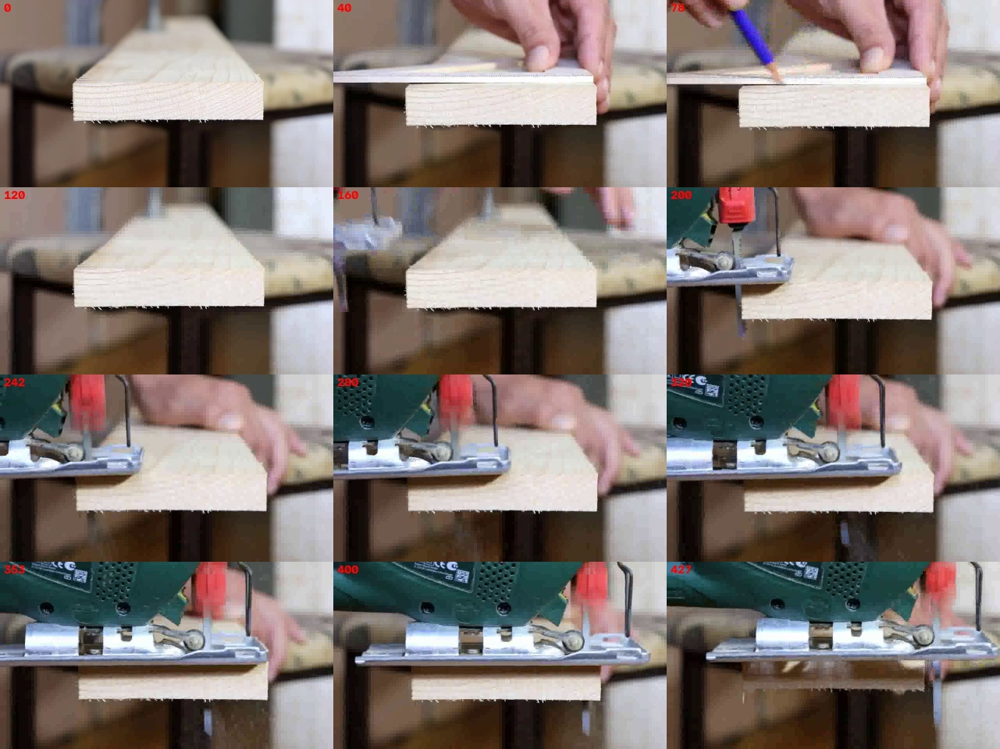
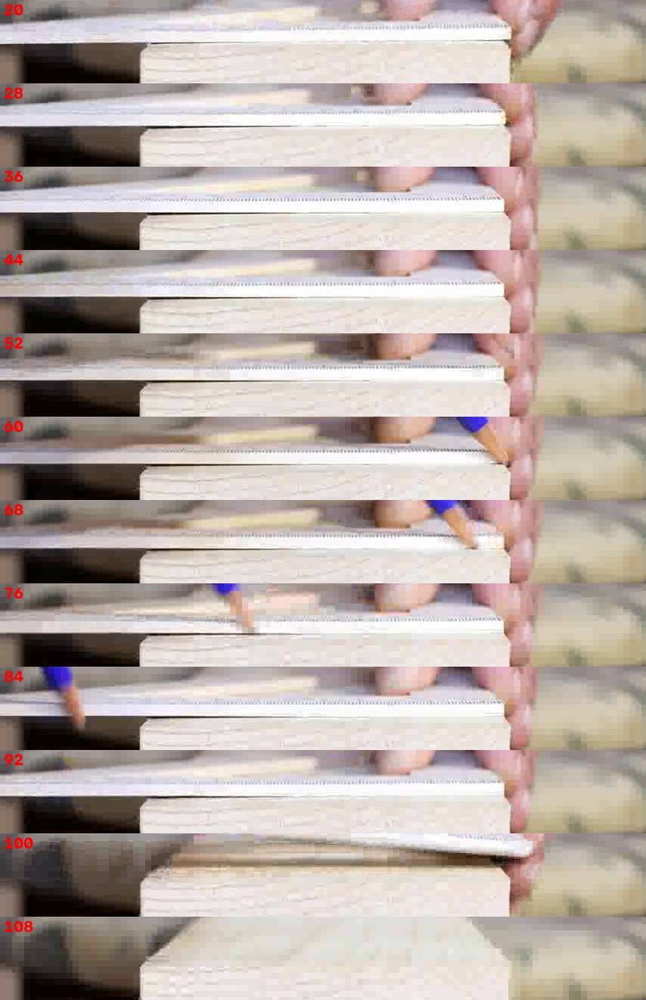
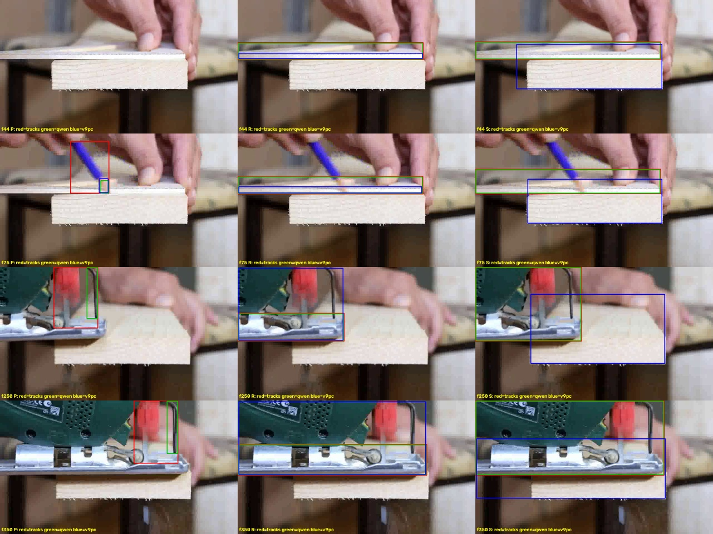

← 视频与问题 · 评估员逐视频报告（由 outputs/eval/*.md 生成）
主因层：尺度（refmeasure 的刻度测量），其次是跟踪（锯、铅笔身份切换）和 2D 求值（平均速度的取段、厚度和长度的取法） 根因：画面里能测出尺度：毫米刻度周期 4.70 px，厘米长刻度周期约 47 px（正好 10 倍），所以 0.02125 cm/px。但 refmeasure.periodic() 是在整只框里按列取 |dx| 均值再做自相关，又把尺子出画后跟到锯上的帧也算进去，量到的是 H.264 的 8 px 编码块网格（7.98 px，锯的帧上也是 8 px），长刻度在 24/32/64 之间跳，conf=0，于是没有尺度，四题都由 Qwen 独答。
internet_0004 评估（锯木块 + 铅笔，prior "ruler calibre = 1 cm"，4 题 S2）
数据：outputs/val_mh3_routed.csv（0.7230），对照 outputs/val_defaults_routed.csv。视频 854×480，25 fps，428 帧，固定机位、单镜头。测试集同一视频为 960×540，量得刻度周期 5.32 px，折合到 854 宽是 4.73 px，方法可以直接迁移。
题目表
| 题 | 答案 | 几何 | 场景值(s2d) | Qwen (mh3 / defaults) | 最终 | MRA | 按画面估（0.02125 cm/px） | 主因层 |
|---|---|---|---|---|---|---|---|---|
| 木块 length (cm) | 9.9 | 0.65（把"刻度 1 cm"当成尺长 754 px = 1 cm） | 无尺度 | 12.5 / 12.5 | 12.5 | 0.7 | 488 px → 10.37（MRA 1.0） | 尺度 |
| 木块 thickness (cm) | 1.9 | 0.35（同上） | 无尺度 | 2.5 / 2.5 | 2.5 | 0.6 | 正面 96–98 px → 2.04–2.08（MRA 0.9） | 尺度；s2d 的层高 260 px 含顶面 |
| 铅笔尖平均速度 (cm/s) | 14.1 | 回退 50；v9 几何 0.323（conf 0.045） | 无尺度 | 0.323 / 1.0 | 0.323 | 0.0 | f65→f82 移动 452–465 px / 0.68 s → 14.1–14.2（MRA 1.0） | 尺度 + 低置信提示被照抄 |
| 锯的平均速度 (cm/s) | 1.2 | 回退 50 | 无尺度 | 1.5 / 1.5 | 1.5 | 0.7 | 锯条 x 157→691 用 9.6 s → 1.18；只算切入后（8.96–16.64 s）→ 1.39；鞋板前沿（x2）→ 1.23 | 尺度 + 锯无正确轨迹 |
现在的均值 0.5。如果尺度、取段和跟踪都对，按画面估算约 0.9–0.97。
尺度到底能不能从画面得到：能
逐帧看尺子。尺子在 f≈4–100（0.16–4 s）出现：白色直尺平放在木块顶上，几乎是侧对镜头，前沿有一排很细的刻度，第 194 行附近。证据如下：
- 放大裁图：
ruler44_1.png、ruler44_2.png（f44，放大 4 倍，红色标尺每格 10 px）。刻度清楚、等距，50 px 里大约 10.6 格。 - 多帧平均（f30–56），逐行 FFT（每行先去掉 61 px 的滑动均值）：
- 第 192–197 行：细周期 4.69–4.71 px，峰值与中位数之比 12–39（极强）。
- 第 188–190 行（长刻度往上伸出来的那几行）：粗周期 47.1–47.9 px，峰比 16–21，等于细周期的 10.0 倍。第 192–193 行另有 23.5 px（5 mm 的中刻度）。
- 所以细刻度是 1 mm，长刻度是 1 cm，换算成 1 cm = 47.05 px，0.02125 cm/px。
- 单帧 f24/36/44/52/92 的 x∈[200,640] 段都是 4.70–4.73 px。把 x 分成 80 px 的窗口分别拟合，局部周期在 4.66–4.73 之间，没有看到透视缩放，尺子也基本水平：刻度行 y=193±1，整条只差约 1 px。
- 长刻度用峰值检测去数一根根位置不稳（残差可达 10 px，见
ruler_longticks.png），看图也看不清。逐行 FFT 的 10× 关系是可靠的，逐根数长刻度不可靠。 - x<200 那一段（尺子伸出木块、离焦）周期跳到 11–14 px，应排除。用"同一行不同 x 窗口的一致性"可以自动排掉。
- 深度：尺子平放在木块顶面，前沿和木块正面基本同深（相差几毫米），木块正面可以直接用这个尺度。
现有缓存为什么拿不到（复现见 refmeasure.periodic('val','internet_0004','ruler')）：
- 取帧：在 ruler 轨迹的全部帧里等距取 8 帧（4, 57, 163, 216, 269, 374, 427）。f160 以后三份缓存的 "ruler" 都跟到了锯身上（
tracks_overlay.jpg第 2 列），所以 8 帧里有 5 帧根本不是尺子。 - 剖面：在整只框（62 px 高，含手、木块顶面）上按列取 |dx| 均值，刻度行只占约 5 行，信号被稀释了；而且 |dx| 的列均值正好会放大视频编码 8×8 块边界的列。结果所有帧的细周期都是 7.7–8.03 px，锯的帧也一样，说明这是编码块，不是刻度。长周期 24/32/64 是 8 的倍数，spread 1.6，conf 0。
- 我在同一个框里只取能量最大的刻度行，用 |dx| 做自相关，结果仍然不稳（4.9 / 11.9 / 23.8 / 7.0），说明 |dx| 加"取最强自相关峰"这个组合本身就不行；改用去趋势的灰度做 FFT 就稳定。
- refmeasure v4 以后的缓存里干脆没有
ruler|spacing这一项（只有ruler|length，666 px，在 f242/353 量的其实是锯），scene2d 记的是"calibre: not measurable … no scale"。
各题链路
Q1 length / Q2 thickness（S2 静态尺寸）
- 解析：几何流水线把 "ruler calibre = 1 cm" 解析成了 ruler 的 length = 1 cm（
prior length of 'ruler' = 754.0 px），于是 0.65 cm、0.35 cm。scene2d 认得这是 calibre，正确地不用尺长。几何解析和 scene2d 的认定不一致。 - 清单：4 个物体，ruler 为 class / reference_only，没有问题。
- 跟踪：木块框 [185,41,676,311] 包含了透视下可见的顶面（木板向后延伸），手按尺子时框顶会跳到 74 左右。真正的正面 x 184–675（宽 488–489，各帧稳定），y 210–306（f5）/ 207–305（f120），约 96–98 px。f44 手压尺子时下沿到 318，高 105，可能是木板被压得倾斜。
- s2d 层：
extent_px的 w=488 是对的，但 length 取 along=407.8：静止木块的朝向被定成 "travel direction"（框顶抖动被当成运动，运动模型是 const_acc，见internet_0004_overlay_3s.jpg里木块中心的乱轨迹）。thickness 取 height=260 px（hull 含顶面），即使有尺度也会是 5.5 cm。 - Qwen 没有尺度时给 12.5 / 2.5，属于常识猜测。
Q3 铅笔尖平均速度
- 跟踪：tracks_v9pc 的铅笔是笔尖框，f46–89 正确。tracks_qwen 在 f55–85 是笔尖，f160 以后跟到锯的红把手和导杆上。默认 tracks 的框是整支笔加手，f160 以后同样跟到锯上（身份切换，
tracks_overlay.jpg第 1 列）。 - 场景图（scenegraph_pfc）：铅笔 "on the wood block" 0–8.6 s、"on the saw" 8.6–16.48 s、held_by 16.48–17.08 s。实际笔只在 2.0–3.56 s 出现，8.6 s 以后的边全是错轨迹造成的；在场性也没把 3.6 s 以后判为 absent。
- 2D 求值：方法是 "net displacement / time"，取整段可见区间。v9pc 整段（46–89）即使给了尺度也只有 4.42 cm/s，因为包含 f46–65 放笔和静止、f83–89 抬笔离开。题目问的是 "moving on the block"，应取在块上运动的那一段：f65→f82，中心 646→191，得 14.2 cm/s。默认缓存把铅笔加锯两段合起来算净位移，只有 0.6。
- 路由：mh3 里 v9 几何 0.323（尺长当 1 cm，conf 0.045，"asked track not verified; < 30% frames; prior track not verified"）经
--hint-fallback给了 Qwen，三份 Qwen 全部照抄 0.323。defaults 没有这个提示，Qwen 答 1.0。两者 MRA 都是 0，这题没丢分，但这是"低置信提示被照抄"的又一个实例。
Q4 锯的平均速度
- 锯 6.3 s 才进画面。红色旋钮的中心 x：f176=157，f216=179（在木块左缘停顿），f232=202，此后约 65 px/s 匀速，f416=691（过右缘 675）。
- 跟踪：没有一份缓存有正确的锯轨迹。默认和 qwen 缓存的 "saw" 在 0.16–4.16 s 跟的是尺子（锯还没出现），6.3 s 以后是锯身，但框左边被画面截断（x0=0），中心速度只有真实值的一半左右。v9pc 的 "saw" 全程是木块框（
tracks_overlay.jpg第 3 列）。 - 2D 求值：净位移除以全时长，用默认缓存得 0.32 cm/s（尺子那段把起点拉偏）。用未截断的右边沿 x2 得 1.23 cm/s。
- 取段有歧义：全程（7.0–16.6 s）是 1.18，只算切入之后（8.96–16.64 s）是 1.39。真值 1.2 更接近全程。
根因结论
- 【尺度 / refmeasure，未在修】刻度类 prior 的周期测量量到了编码块。证据：periodic() 每帧都给 7.7–8.03 px，锯的帧也一样；正确的做法（刻度行、去趋势灰度、FFT、只用尺子在场的帧）得到细 4.70 px、粗 47.1 px（10×），多帧多窗口一致到 ±1%。in_progress.md 里 qp-tools 一栏写着"刻度（ruler）和地砖测量仍失败"，只是一句开放项，没有具体方案，本报告补上根因和方案。
- 【跟踪 / 在场性，部分在修】物体离场后，SAM 2 的框跳到新出现的物体上（ruler→锯，pencil→锯），对象出现之前框贴在别的物体上（saw→ruler）。v9pc 的 saw 选成了木块。在场性没有把这些区间判为 absent，场景图也照着错轨迹写了 "pencil on saw"。in_progress 里有"在场性 / 出画判定"（ceb82e3 已交付），但这个视频上没生效。
- 【2D 求值，部分在修】"average velocity of X moving on …" 应取运动段（起动到停止 / 离开支撑面），现在取的是整个可见区间的净位移。静止物体的朝向被定成 travel direction，length 取了 along。盒子在透视下的 thickness 用了含顶面的 hull 高度。其中"运动判据加尺寸下限"已在 0196 报告里派出。
逐条问题（按影响面排序）
1. refmeasure.periodic 量到编码块而不是刻度（尺度层）
- 现象：internet_0004 四题都无尺度，Qwen 独答，0.5。
periodic()返回 fine 7.98 / long 31.99 / spread 1.6。按画面应是 fine 4.70、long 47.05。图：ruler44_1.png、ruler_avg30_56.png、ruler_strip.jpg。 - 根因层：尺度（refmeasure，graduation prior）。
- 同类：测试集只有本视频 4 题（
ruler calibre = 1cm，960×540）。周期测量的同一套原则（取帧要在场、取行、去掉编码块周期）也适用于车道线间距（lane width 在测试集 35 题，internet_0001/0002…）和地砖周期（internet_0005）的图像周期交叉校验。 - 通用修改建议（
pipeline/refmeasure.py的periodic()）： - 取帧：只用参考物在场且框与其稳定外观一致的帧，例如框面积和长宽比在首段中位数 ±30% 以内，或在场性 present，或 tight-box 缓存的帧；不要在整条轨迹上等距取。
- 取行：在框内逐行算高频能量，取刻度行附近 ±3 行，不要整框求平均。
- 剖面：用去趋势（减去滑动均值）的灰度，不用 |dx|；用 FFT 或带抛物线插值的自相关；同时把画面分成若干 x 窗口分别估计，要求窗口之间一致（spread <5%），以此排掉离焦段和透视段。
- 编码块抑制：周期落在 8 px 整数倍 ±0.15 px，且在同帧的背景条带或参考物不在场的帧上也测得出来的，判为压缩伪影并拒绝。
- 单位分级：在刻度行上下相邻几行找 5× 或 10× 细周期的粗周期（长刻度伸出的那几行），比值接近整数 10（或 5、2）才确认 "fine = calibre/10"；calibre = 1 cm 时，粗周期 = 1 cm。找不到粗周期时，按"细刻度 = 1 mm"的假设给出低 conf，并用场景里物体的常识尺寸做合理性互检（refmeasure v6 已有 typical-size 互检）。
- 写进缓存的
ruler|spacing带上 fine_px、long_px、ratio、窗口 spread、所用帧，以及每次拒绝的 8 px 伪影。 - 验收：val internet_0004 得 fine 4.70±0.05、long 47±1、ratio 10±0.3、conf ≥0.5、scale 0.0212 cm/px±3%；测试分辨率上 fine 5.3±0.1；没有任何帧报 8.0/16/24/32；其余带 refmeasure 的视频值不变（回归）。
- 负责人：qp-tools（refmeasure）。scene2d 只需在 prior_kind=calibre 时读取
ruler|spacing并用 long_px（qp-code-2d 确认接口）。
2. 几何流水线把 "calibre = 1 cm" 当成尺长（解析 / 提示层）
- 现象：几何 q0/q1 用 "prior length of 'ruler' = 754 px" 得 0.65 / 0.35 cm；v9 几何 q2 得 0.323 cm/s（conf 0.045），经
--hint-fallback给 Qwen 后，三份全部照抄 0.323。 - 根因层：parse / calibrate（几何的 prior 解析），以及 vlm_hint 的提示门控。
- 同类：几何解析只影响本视频（测试 4 题）。"conf 极低的提示仍下发并被照抄"是通用问题，WORKING_RULES 里"宁可不给提示"的原则在
--hint和--hint-fallback路径上没有按 conf 门控。 - 通用修改建议：
parse.parse_prior识别 calibre / caliber / graduation / tick / division 为prior_kind=spacing，和 scene2d、refmeasure 的判定统一。几何标定在 spacing 时只用 refmeasure 的|spacing测量，没有就标 unobservable（method 归入no_value），不能用物体外框长度。- vlm_hint 对几何提示按 conf 门控：conf 低于某个阈值（阈值用验证集 conf 分桶的单调性来定，和 scene2d-direct 的做法一样，不用答案调常数）不下发；
--hint-fallback路径也走同一门控。 - 验收：本视频几何四题都是 unobservable 或无提示；Qwen 的 q2 不再等于几何值；全验证集 Qwen 照抄 conf<阈值提示的题数为 0。
- 负责人：qp-tools。
3. 跟踪身份切换：物体离场后框跳到新物体上，出现之前框贴在别的物体上（跟踪 / 在场性）
- 现象：默认和 qwen 缓存里，ruler f160+ 跟的是锯身，pencil f160+ 跟的是锯的把手，saw 在 f4–100 跟的是尺子；v9pc 的 saw 全程是木块（choose 选错）。图：
tracks_overlay.jpg、internet_0004_overlay_10s.jpg。 - 根因层：perceive（SAM 2 传播没有离场判定）、presence、run --choose。
- 同类：in_progress 里 0041x（球出画）、0015（鸟不在场）也是在场性和身份问题。本视频的特点是同一画面里先后出现不同物体（尺子+铅笔 → 锯）。
- 通用修改建议：presence 逐段校验，在轨迹的外观或框尺寸突变点（面积变化 >2 倍、长宽比翻转、中心跳变超过框尺寸）切段，每段用 Qwen 问"这段是不是 X"，不是的段标 absent、删框。choose 的候选里如果某候选与另一个已命名物体（木块）IoU >0.8，不能选它作为 saw。场景图的 per-frame 关系只在 present 段里生成。
- 验收：本视频 pencil 只在 1.8–3.6 s 有框；ruler 只在 0.16–4.1 s；saw 只在 6.3 s 以后，且是锯不是木块；场景图不再有 "pencil on saw"。
- 负责人：qp-tools。
4. 平均速度取整个可见区间的净位移，没有按题目的运动段取（2D 求值）
- 现象：即使尺度和 v9pc 笔尖轨迹都对，"net displacement / time" 用 f46–89 也只有 4.42 cm/s（含放笔、静止、抬笔）；按在块上的运动段 f65–82 是 14.2。锯同样受截断框和尺子段拖累（0.32 → 应为 1.18–1.39）。
- 根因层：scene2d 平均速度的取段。
- 同类：所有 "average velocity/speed of X moving/sliding on Y" 一类的 D2/S2 题，凡是物体有静止段、进出画、被手拿的，都会受影响。
- 通用修改建议：(a) 平均速度默认取运动段：用分段模型的起动点和停止点（速度高于噪声阈值的最长连续段），同时与场景图 "on <surface>" 的区间求交。(b) 框贴边截断时（x0=0 或 x1=W），用未截断的那条边算位移（solve 已有 truncated-box 标记，scene2d 应复用）。(c) 题干修饰语 "moving on the block" / "cutting the block" 作为取段条件交给场景图的 on 区间。
- 验收：本视频给定尺度后，铅笔 14±1.5、锯 1.2–1.4；其它 D2 题的平均速度不变（回归）。
- 负责人：qp-code-2d（取段、截断边）；"题干修饰语 → 区间"由 qp-tools 在 parse / scenegraph 里出接口。
5. 静止盒子的 length 取 along（travel direction），thickness 取含顶面的 hull 高（2D 尺寸）
- 现象：木块层 w=488（对），但 length 取 along=407.8 px，因为静止物体的朝向被设成 "travel direction"（框顶抖动被拟合成 const_acc，见
internet_0004_overlay_3s.jpg）。thickness 取 h=260 px（含透视顶面），正面实际 96–98 px。给定尺度后：length 8.67（MRA 约 0.7），thickness 5.5（MRA 0）。按画面应是 10.37 和 2.05。 - 根因层：scene2d 的 extents 与朝向。
- 同类：朝向问题与 0196 报告派出的"v4 运动判据加物体尺寸下限"同源（in_progress，只标注）。"thickness / height of a box 用正面而不用含顶面的 hull"是新问题，凡是斜俯视的盒子、板材都会受影响。
- 通用修改建议：(a) 静止物体（events.moving=false 或净位移低于尺寸下限）的朝向用掩码主轴或水平方向，不用 travel。(b) thickness / height 题对 shape=box 且 hull 明显是梯形加矩形（透视顶面）的情况，取正面矩形的竖直范围：在 mask 内找最强的两条水平边，或者把这一问交给 refmeasure 的标注（目前 targets() 只对 structure 和 prior 物体，可扩展到"静态尺寸题且 hull 与框不一致"的物体）。
- 验收：本视频木块 length 用 488±5 px，thickness 用 96±5 px；其它 S2 尺寸题回归不变。
- 负责人：qp-code-2d（朝向、正面高）；refmeasure 扩展由 qp-tools 负责。
关于"让 Qwen 数两条长刻度之间的小格数"
不建议作为主路径。854 宽的整帧上，刻度周期只有 4.7 px，长刻度用肉眼和峰值检测都数不准（残差可达 10 px）；放大 4 倍以后人眼能数，但 Qwen 在这个尺度上的计数能力未经验证，而且 refmeasure 的 docstring 已注明 "Qwen cannot resolve millimetre ticks"。图像 FFT 在多帧多窗口上一致到 ±1%，可解释、可自检。Qwen 最多用来确认"长刻度之间是 10 格"这一单位假设：把放大 4 倍的刻度行裁图交给它，问长刻度之间是 5 格还是 10 格，作为第 5 步单位分级的备用。
真值
四个真值都与画面自洽：10.37 / 2.05 / 14.2 / 1.18–1.39 对 9.9 / 1.9 / 14.1 / 1.2，没有存疑项。
图（scratchpad）
internet_0004/contact.jpg
（12 帧总览）internet_0004/ruler_strip.jpg
（f20–108 尺子和铅笔条带）- /tmp/claude-1017/-data-yumenghe-QuantiPhy/823507c7-069c-4584-aec0-69d0a1b126a7/scratchpad/eval_0004/ruler44_1.png、ruler44_2.png（f44 刻度放大 4 倍，带像素标尺）
- /tmp/claude-1017/-data-yumenghe-QuantiPhy/823507c7-069c-4584-aec0-69d0a1b126a7/scratchpad/eval_0004/ruler_avg30_56.png、ruler_longticks.png（多帧平均、长刻度峰值）
- /tmp/claude-1017/-data-yumenghe-QuantiPhy/823507c7-069c-4584-aec0-69d0a1b126a7/scratchpad/eval_0004/block_005.png、block_044.png、block_120.png（木块正面，带像素标尺）
internet_0004/tracks_overlay.jpg
（三份缓存 P/R/S 的框，f44/75/250/350；红 = tracks，绿 = tracks_qwen，蓝 = tracks_v9pc）- /tmp/claude-1017/-data-yumenghe-QuantiPhy/823507c7-069c-4584-aec0-69d0a1b126a7/scratchpad/eval_0004/internet_0004_overlay_{1.8s,3s,10s,14s}.jpg（scene2d 叠加图，临时 run outputs/scene2d_eval/eval_0004_tmp）